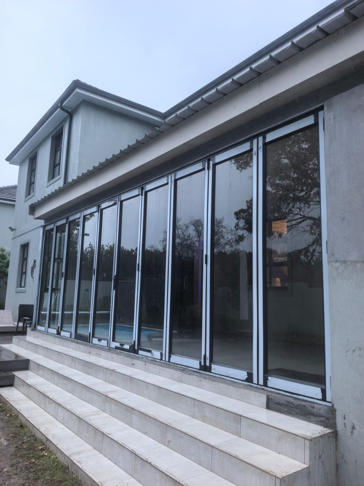
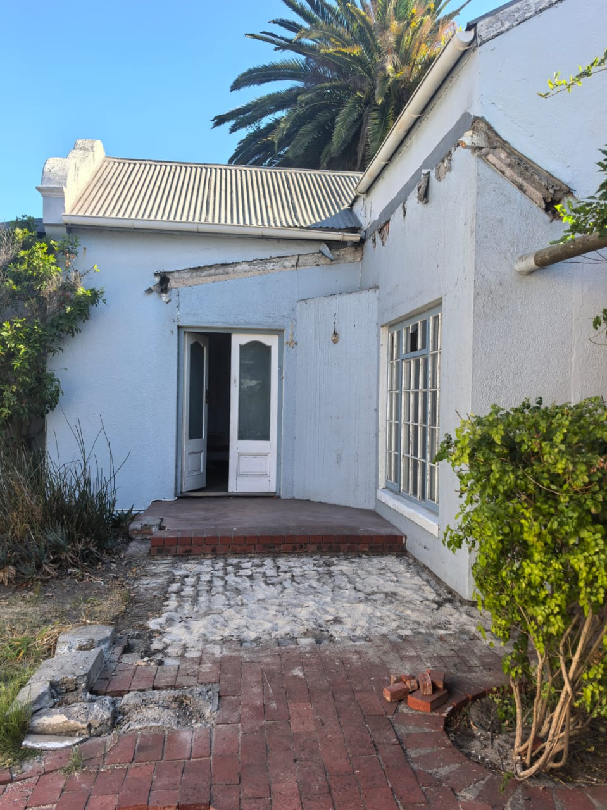
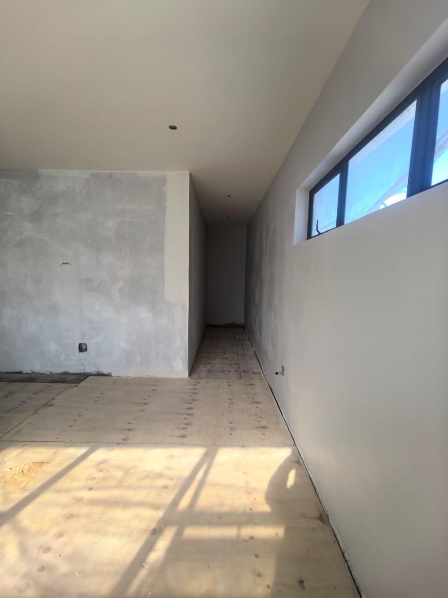
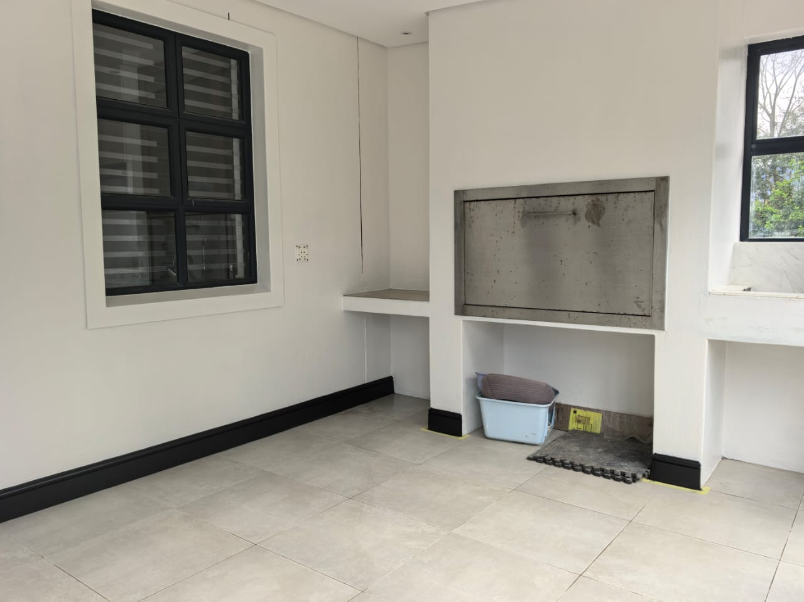
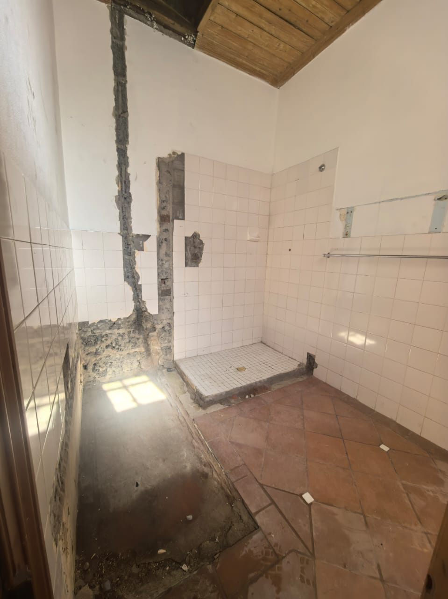

Solar
#FFF4D6

Light
Line
Volume
Real supplied photography
An editorial study of existing structure, natural light and changing interior planes.

Site observations / 01—04
Swipe the image study.



Structure creates
the rhythm.
TM Construction & Refurbishment
An editorial study in space and renewal
01 / 03
A restrained study of contrast: warm ground, architectural depth and open sky.
#FFF4D6
#10233F
#7EC8F8
Editorial direction
Space, held in balance.
Light, given room.
02 / 03
Real supplied photography.
Visible conditions only.
A brighter horizon
Measured composition.
Disciplined contrast.
Room to breathe.
03 / 03
TM
TM Construction
& Refurbishment